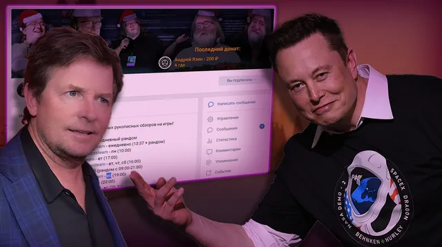

Итоги лояльности
ВКонтакте
😎 Что ж, через пару часиков наступит понедельник, однако, по доброй традиции, за…
17 января 2021 · №1033 в выгрузке стены · оригинал во ВКонтакте ↗

😎 Что ж, через пару часиков наступит понедельник, однако, по доброй традиции, завершаем выходной минутой благодарности нашим драгоценным спонсорам, тем самым людям, благодаря которым вы ежедневно наслаждаетесь сверхкачественным контентом!
=============
🤑 [id347679904|Андрей Язин] - тот самый молодой человек, который поддерживал нас чуть ли не с самого начала нашей деятельности, именно благодаря ему мы стали теми, кем стали, он настоящее олицетворение Илона Маска, спасибо!
😚 [id21889863|Егор Малахов] - наш первый спонсорский подписчик , настоящий ценитель прекрасного и просто хороший человек, благодарствуем!
================
🌷Пожалуй напомним, как вы можете стать нашим спонсором:
> Внеся единоразовый [https://vk.com/app6887721_-196461758?ref=group_menu|донат];
> Оформив спонсорскую [https://vk.com/criticssteam?source=description&w=donut_payment-196461758|подписку];
#ИтогиЛояльности@criticssteam №29
=============
🤑 [id347679904|Андрей Язин] - тот самый молодой человек, который поддерживал нас чуть ли не с самого начала нашей деятельности, именно благодаря ему мы стали теми, кем стали, он настоящее олицетворение Илона Маска, спасибо!
😚 [id21889863|Егор Малахов] - наш первый спонсорский подписчик , настоящий ценитель прекрасного и просто хороший человек, благодарствуем!
================
🌷Пожалуй напомним, как вы можете стать нашим спонсором:
> Внеся единоразовый [https://vk.com/app6887721_-196461758?ref=group_menu|донат];
> Оформив спонсорскую [https://vk.com/criticssteam?source=description&w=donut_payment-196461758|подписку];
#ИтогиЛояльности@criticssteam №29